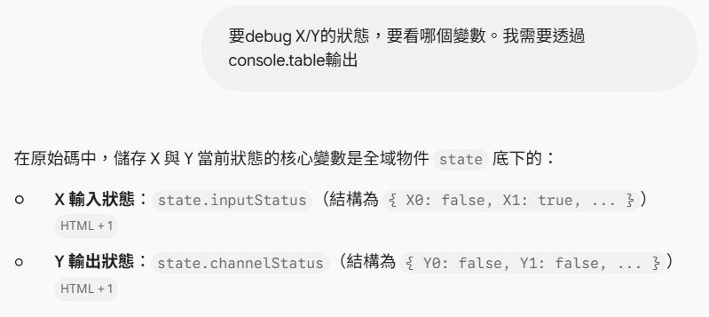
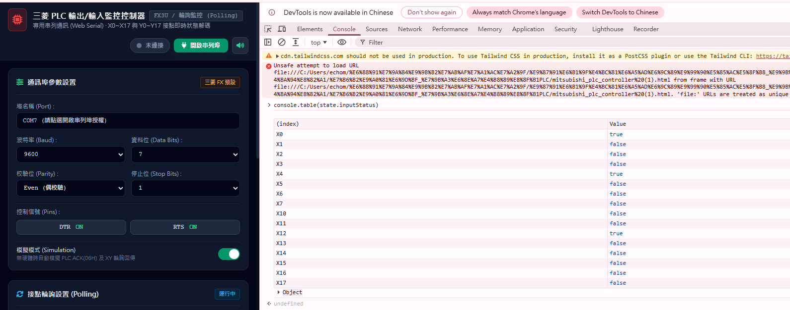
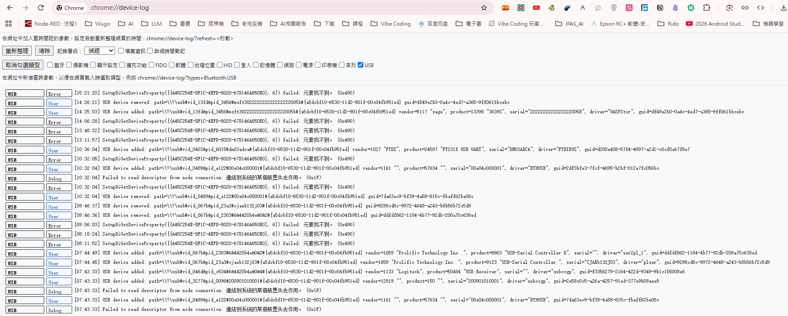
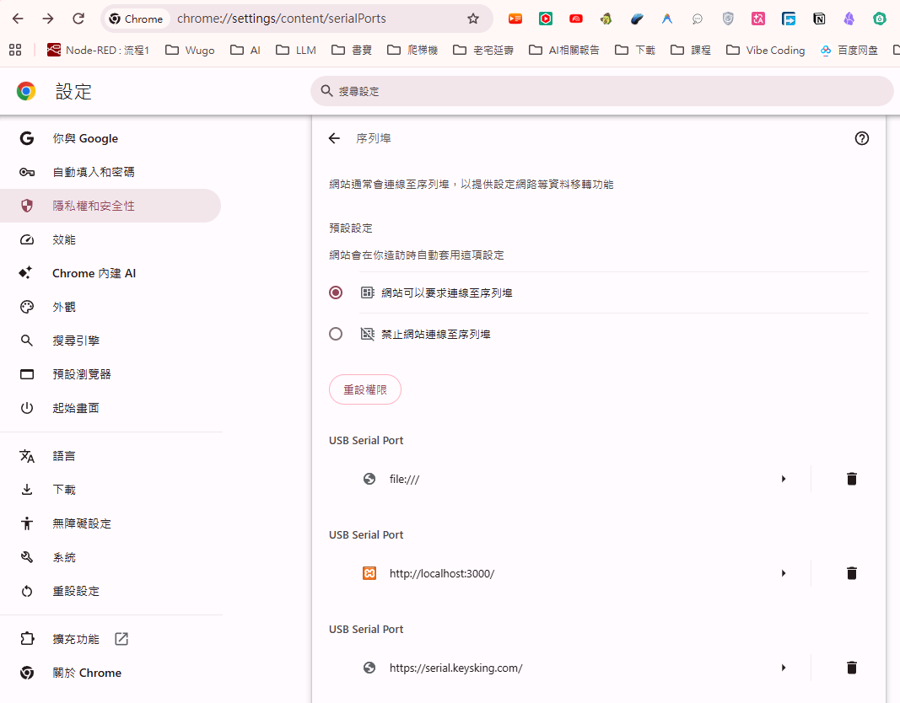
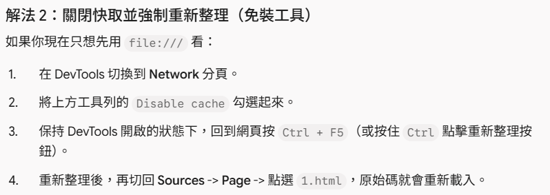
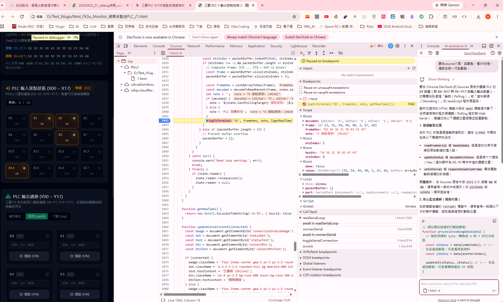
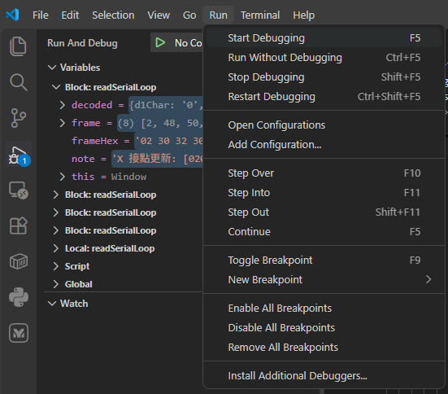
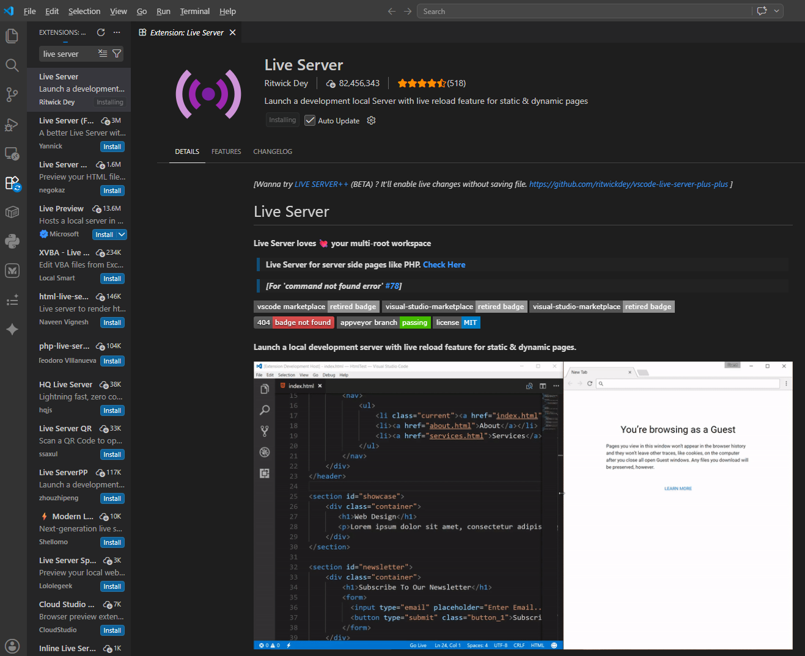
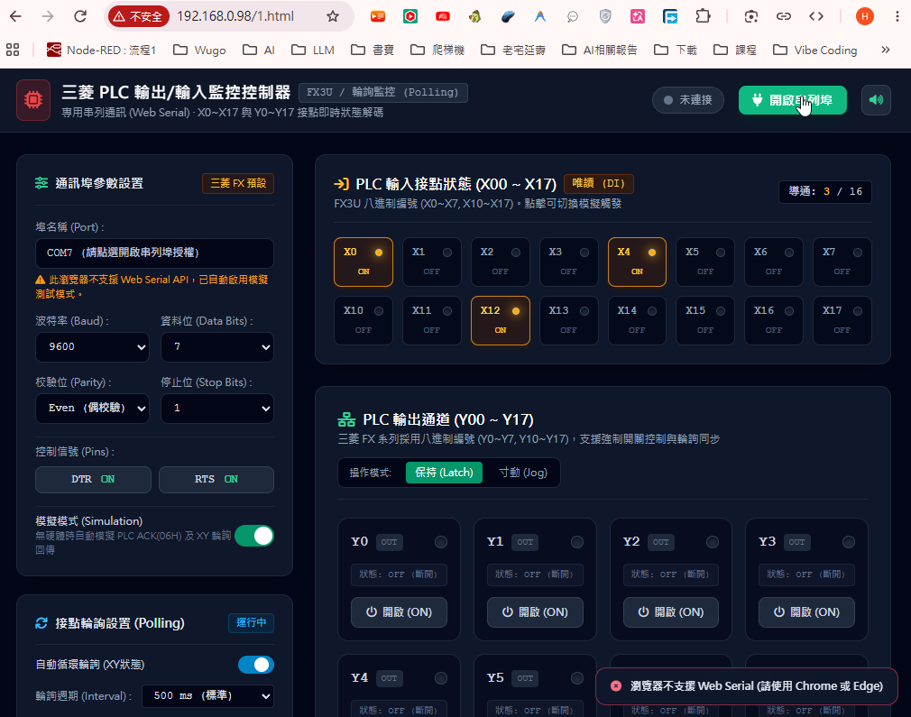
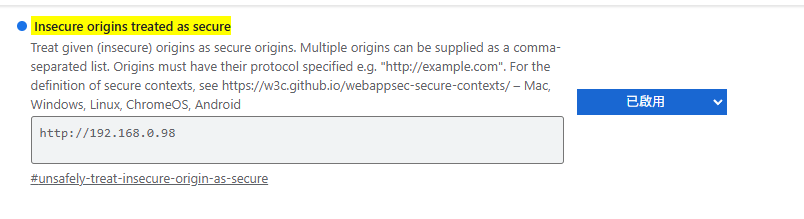

工控前端工程師必備調試技巧
Chrome DevTools · Web Serial API · VS Code Breakpoints
網頁版監控 PLC (html_FX3u_Monitor) VS Code 網頁 Debug 全解析
當我們在瀏覽器上開發透過 Web Serial API 直連三菱 FX3U PLC 的 HMI 圖控介面時，常遇到斷點設不進去、Live Server 快取無法更新、狀態難以視覺化觀測、甚至本機 HTTP 伺服器因非安全來源遭瀏覽器阻擋等疑難雜症。本指南依據原廠實戰教學投影片，完整萃取 25 頁精華與 33 張圖表，帶您一步步打通前端調試任督二脈！
核心技巧一 (Slide 07~08)
Console state 物件即時檢視與 console.table 表格化輸出
在除錯 X 輸入與 Y 輸出接點狀態時，逐一查看陣列或打 log 非常耗時。在 Chrome DevTools 的 Console 面板中，可以直接輸入全域 state 物件檢視當前記憶體，並使用 console.table() 格式化為易讀的排版表格：
// 1. 檢視全域 state 物件
state
// 2. 表格化輸出 Y0~Y17 輸出狀態
console.table(state.channelStatus);
// 3. 表格化輸出 X0~X17 輸入狀態
console.table(state.inputStatus);
投影片重要提點 (Slide 08)：在 Console 測試時，部分瀏覽器環境安全性限制可能無法直接複製貼上，建議親自動手打字輸入測試！
投影片 Slide 07：Console 輸出 X/Y 狀態變數

透過 Chrome DevTools 尋找持有 X/Y 狀態之全域變數，定位關鍵通訊陣列。
投影片 Slide 08：state 與 channelStatus 記憶體表格

直接在 Console 印出 state 物件，利用 console.table 直觀比對 16 個接點的布林值。
核心技巧二 (Slide 05~06)
Chrome 內建底層序列埠日誌與裝置授權管理
當點擊網頁「連線」卻找不到 COM Port 或一直斷線時，可善用 Chrome 專屬的內部協定網址查看底層連線日誌與解除序列埠佔用：
- chrome://device-log/：查看 Chrome 底層 USB / 序列埠裝置拔插、驅動加載與錯誤 Event Log。
- chrome://settings/content/serialPorts：檢視目前已授權存取 Web Serial 的網站清單，若連線異常可手動重設或清除權限。
投影片 Slide 05：chrome://device-log/ 底層日誌

即時查看 USB-SC09 / CH340 / PL2303 晶片在 Chrome 核心中的識別狀態與通訊事件。
投影片 Slide 06：chrome://settings/content/serialPorts

管理已允許存取序列裝置的 URL，防止被舊 Session 鎖定佔用。
核心技巧三 (Slide 09~13)
解決 Resource was not cached、強制刷新與 Sources 斷點設定
在 Sources 面板中除錯常遇到兩大痛點：
- Content unavailable. Resource was not cached：瀏覽器快取導致原始碼不同步。解決方案：在 Network 面板勾選 Disable cache，並按下 Ctrl + F5 強制清除快取重新載入。
- 斷點設在何處才能攔截 XY 狀態：需在通訊回呼函式（如接收封包並解析完 CRC / CheckSum 之後的賦值行）設定斷點，才能在變數更新瞬間停住執行緒。
投影片 Slide 09：強制刷新 Ctrl + F5

解決資源未快取與程式碼更新未反映問題，確保偵錯最新版代碼。
投影片 Slide 13：Sources 斷點設定位置

在通訊解碼迴圈中設斷點，逐行單步除錯 X/Y 暫存器計算結果。
核心技巧四 (Slide 14~21)
VS Code Start Debugging 與 Live Server 斷點無法停止痛點排除
許多同學習慣使用 VS Code 的 Live Server 擴充套件，但直接用 Live Server 執行時，常發現在 VS Code 編輯器行號旁下的紅點（斷點）完全不會停下來！
為什麼 Live Server 設斷點無法停止？(Slide 16)
因為 Live Server 只是單純的靜態 HTTP 伺服器，並沒有連接 VS Code 的 Debug Session (偵錯階段)！若要在 VS Code 原生環境中直接斷點偵錯，必須透過 Run and Debug (F5) ➔ 啟動 Chrome Debugger 並綁定通訊埠。
投影片 Slide 14：VS Code Start Debugging (F5)

利用 VS Code 內建 Debugger 附加到 Chrome 瀏覽器處理程序。
投影片 Slide 16：Live Server 斷點失效現象分析

清楚辨別一般預覽與真正 Attach Debugger 的本質差異。
核心技巧五 (Slide 22~25)
Web Serial 安全來源限制 (HTTPS / Localhost) 與 Chrome Flag 解除限制
在工廠區域網路架設 XAMPP 或本機 IP 伺服器 (如 http://192.168.1.100) 進行多台電腦連線測試時，常遇到「瀏覽器不支援 Web Serial (navigator.serial 為 undefined)」的致命問題！
安全限制原理： W3C 規範要求 Web Serial API 只能在
安全來源 (Secure Context) 下運作，即：
- https://（具備有效 SSL 憑證）
- http://localhost 或 http://127.0.0.1（本地回環不受限）
- 非本機的 HTTP IP 位址（如 XAMPP 區網測試）預設會被 Chrome 完全封鎖 Web Serial！
【原廠工程解方】在 Chrome 開啟不安全來源白名單 (Slide 25)：
1. 在 Chrome 網址列輸入：chrome://flags/#unsafely-treat-insecure-origin-as-secure
2. 將欲測試的本機 IP (例如 http://192.168.x.x:8080) 填入白名單輸入框中。
3. 將右側狀態切換為 Enabled。
4. 點選右下角 Relaunch (重新開啟 Chrome)，即可在區網 HTTP 環境順利調用 Web Serial API！
投影片 Slide 22：瀏覽器不支援 Web Serial 警告

當非 HTTPS / 非 localhost 載入時，navigator.serial 自動失效。
投影片 Slide 25：Chrome Flags 安全白名單設置

將開發用 IP 設為例外，免裝 SSL 憑證也能在局域網直接進行串口通訊測試！